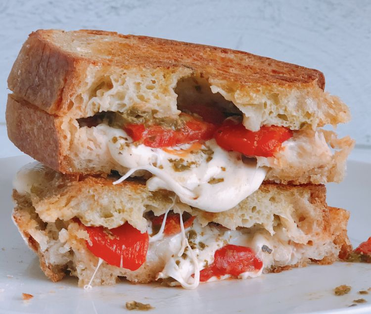

Caprese Panini

Description
A favorite salad get its turn in a sandwich
Ingredients
- 2 tablespoons olive oil, divided
- ¾ cup diced tomato
- 1 tablespoon drained capers
- 1 pinch red pepper flakes
- ½ teaspoon balsamic vinegar
- 4 slices sourdough bread
- ¼ cup prepared pesto
- 1 (6 ounce) package sliced mozzarella cheese
- sea salt and coarsely ground pepper to taste
Steps
- Heat 1 tablespoon oil in a nonstick skillet over medium-high heat. Add tomato, capers, and pepper flakes; saute until tomatoes just start to break down, about 3 minutes. Remove from the heat and stir in vinegar.
- Brush one side of each bread slice with remaining oil. Spread the other sides with pesto. Place 2 slices of bread, pesto sides up, on a work surface. Layer with mozzarella cheese and then tomato mixture. Sprinkle with salt and pepper and top with remaining bread, oiled sides up.
- Toast sandwiches in a large skillet over medium heat until golden, 5 to 7 minutes per side. Use a heavy skillet on top of the sandwiches to weigh them down as they cook.